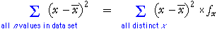
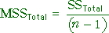
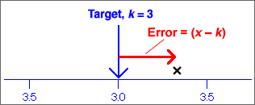
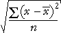

If you don't want to print now,
Summarising centre and spread
Two important aspects of a distribution of values are particularly important.
We will describe centre and spread with numerical values called summary statistics. They provide particularly concise and meaningful comparisons of different groups.
Simple summaries of centre and spread
Information from median and interquartile range
Given the median and interquartile range, it is possible to sketch a bell-shaped histogram that matches these values. Such a 'guess' is often close to the actual distribution of values.

Median
Half of the data values are below the median and half are above it:

Mean
The mean is:

If each value in a dot plot was a solid object resting on a beam with negligible mass, the mean is the value at which the beam will balance.

Because of the leverage exerted by points far from the centre, the mean is further into the tail of a skew distribution than you might expect.
Although both describe aspects of the 'centre' of a distribution, the median and mean are not the same and can occasionally have very different values.
Social vs economic indicator
For some data sets, the median can be considered to be a social indicator, whereas the mean can be interpreted as an economic indicator. In a company,
Outliers
An outlier has little effect on the median, but affects the mean more strongly. The median is said to be more robust.
Skew distributions
When a distribution is fairly symmetrical, the mean and median are similar, but if the distribution is skew, then the mean is usually further into the tail of the distribution than the median.

Simple measures of spread
These are (relatively) easy to understand and explain to others, but neither are commonly used.
Standard deviation
The standard deviation is a 'typical' distance of values from the sample mean.

The standard deviation is denoted by the letter s and is defined by:

The numerator,  , depends on the distances of the values to the mean, so it will be small if the values are all close to the mean and big if they are far from the mean.
, depends on the distances of the values to the mean, so it will be small if the values are all close to the mean and big if they are far from the mean.
Variance
The square of the standard deviation, s2, is called the sample variance. Variances are sometimes reported and used but standard deviations are easier to interpret since they have the same units as the original data (e.g. kilograms or dollars).
'Quarter-range' rule of thumb
For many data sets, the standard deviation is just under a quarter of the range.
 |
This is a simple rule, but is only very approximate. The standard deviation can be more than a quarter the range in distributions with short tails or much less if there are long tails or outliers.
The 70-95-100 rule of thumb
The 70-95-100 rule is more accurate. In many distributions,
The 70-95-100 rule holds approximately for most reasonably symmetric data sets, but for skew data or distributions with long tails, outliers or clusters, it is often less accurate.
Understanding the definition of the standard deviation is much less important than knowing its properties and having a feel for what its numerical value tells you about the data.
Guessing s from histogram
About 95% of the values should be within 2s of the mean, so after dropping the top 2.5% and bottom 2.5% of the values (histogram area), the remainder should span approximately 4s. Dividing this range by 4 should approximate the standard deviation.

Sketching a histogram from the mean and s
Similarly, you should be able to draw a rough sketch of a symmetric histogram with any mean and standard deviation that you are given. (It would be centred on the mean and 95% of the area would be within 2s of this.)
The shape of a distribution
| The mean and standard deviation hold no information about the shape of a distribution, other than its centre and spread. |
Many different distributions have the same mean and standard deviation.

Clusters, outliers and skewness are important features of a data set and should influence the analysis that you perform and the conclusions that you reach. In particular, if you ignore outliers or clusters, you could easily reach the wrong conclusions.
| It is therefore essential that you look at a graphical display of a distribution before summarising with a mean and standard deviation. |
Outliers and the standard deviation
The mean and standard deviation are inadequate descriptions of distributions that have clusters, outliers or skewness.
An outlier has a strong influence on the mean of the data and an even bigger effect on the standard deviation. In the data below, one measurement was missing and coded as '999'. If this value (999) is included, the mean is a feasible value, but the standard deviation should be recognised as being unreasonable.

A graphical display such as a dot plot is the best way to detect an outlier and you should always look at the data before summarising with a mean and standard deviation.
An outlier should be carefully examined. Was the value incorrectly recorded? Was there something unusual about the individual from which the measurement was obtained? If we are convinced that there was something wrong about the value, it should be removed from the data set before further analysis.
Calculating the mean from a frequency table
| x | ƒx | ||
|
|
||
| total | 600 |
|---|
The mean can be easily calculated from this table:

More generally,

where the summation is over the distinct values in the data set, rather than all individuals.
Calculating the standard deviation
A similar formula holds for the standard deviation, using the formula

Within-group and overall standard deviation
In some data sets, the 'individuals' can be split into groups.

When the three groups above (A, B and C) are combined, all information about the differences between the groups is lost. The overall variability is also considerably larger than variability within the groups.
| The standard deviation of the combined data set is often considerably higher than that within the separate groups. |
It is therefore better to separately describe the distributions within the groups than to describe the overall distribution with a single mean and standard deviation.
Types of variation
The table below summarises monthly rainfall data in a city over several years:
| Month | Mean | Standard deviation |
|---|---|---|
| January | 32.13 | 2.11 |
| February | 31.44 | 2.17 |
| March | 31.24 | 2.08 |
| April | 30.46 | 1.73 |
| May | 28.53 | 1.69 |
| June | 26.10 | 1.37 |
| July | 26.43 | 1.32 |
| August | 30.04 | 1.28 |
| September | 33.44 | 1.24 |
| October | 34.93 | 1.01 |
| November | 34.34 | 1.49 |
| December | 32.62 | 1.75 |
| Overall | 30.99 | 3.17 |
We can distinguish between three types of variation in the rainfalls:
Comparing several groups
A new approach is needed to compare the means of three or more groups — the methods for two groups cannot be extended. We again assume a normal model with equal standard deviations,
| Group i: | Y ~ normal (µi , σ) |
Testing whether there are differences between the groups involves the hypotheses,
H0 : µi = µj for
all i and j
HA: µi ≠ µj for
at least some i, j
Variation between and within groups
Testing whether the model means, {µi}, are equal is done by assessing the variation between the group means in the data. However, because of randomness in sample data, the means are unlikely be the same, even if H0 is true.
In the example on the left below, the group means vary so much that the {µi} are almost certainly not equal. However the group means on the right are relatively similar and their differences may simply be randomness.

To assess whether the means are 'unusually different', we must also take account of the variation within the groups. The data set on the left below gives much stronger evidence of group differences than that on the right, even though the group means are the same in both data sets.

The evidence against H0 depends on the relative size of the variation within groups and between groups.
Notation
In the formulae in this page, the values in the i'th group are denoted
by yi 1, yi 2,
... . More generally, the j'th
value in the i'th group is called yij and
the
mean of the values in the i'th group is  .
.
Total variation
| The total sum of squares reflects the total variability of the response. |
The overall variance of all values (ignoring groups) is the total sum of squares divided by (n - 1).

Variation between groups (signal)
| The sum of squares between groups measures the variability of the group means. |
Variation between groups is summarised by the differences between the group means and the overall mean. Note that the summation is over all observations in the data set.

Variation within groups (noise)
| The sum of squares within groups quantifies the spread of values within each group. |
This is also called the residual sum of squares since it describes variability that is unexplained by differences between the groups. Note that the pooled estimate of the common variance, σ2, is the sum of squares within groups divided by (n - g).

Relationship between sums of squares
The following relationship requires some algebra to prove but is important.

Sums of squares
| Sum of squares | Interpretation |
|---|---|
| Overall variability of Y, taking no account of the groups. | |
| Variability that cannot be explained by the model. | |
| Variability that is explained by the model. |
Coefficient of determination
The proportion of the total sum of squares that is explained by the model is called the coefficient of determination,

Example

Hypothesis test
The following hypotheses are used to test whether the group means are all equal:
H0 : µi = µj for
all i and j
HA: µi ≠ µj for
at least some i, j
We will describe some of the steps for this test, but cannot justify them here.
Mean sums of squares
The three sums of squares are first divided by values called their degrees of freedom:
|  | The mean total sum of squares is the sample variance of the response (ignoring groups). |
| The mean within-group sum of squares is the pooled estimate of the variance within groups. | |
| The mean between-group sum of squares is harder to directly interpret. |
The numerators in these ratios add up:
SSTotal = SSBetween + SSWithin
and the same relationship holds for their denominators (degrees of freedom):
dfTotal = dfBetween + dfWithin
F ratio and p-value
The test statistic is an F-ratio,

This test statistic compares between- and within-group variation. The further
apart the group means, the larger SSBetween and the larger the F-ratio.
Large values of F suggest that H0 does not hold — that the group means are not the same.
The p-value for the test is the probability of such a high F ratio if H0 is true (all group means are the same). It is based on a standard distribution called an F distribution and is interpreted in the same way as other p-values.
The closer the p-value to zero, the stronger the evidence that H0 does not hold.
Analysis of variance table
An analysis of variance table (anova table) describes some of the calculations above:

Variance
variance = (standard deviation)2 = 
The units of the variance are the square of the units of the original values. For example, if the values are weights, the standard deviation might be 6 kg, but the variance would be 36 square kg. Since its units are easier to interpret, standard deviations are more easily understood measures of spread, but variances are important in advanced statistics. (An important collection of methods for analysing relationships between variables is called analysis of variance.)
Degrees of freedom (optional)
The divisor (n − 1) in the formula for the sample standard deviation is called its degrees of freedom. This is the number of 'independent pieces of information' that contribute to it.
Distance of values from a target, k
The distance of a single random value from a target is called its error.

If we have several observations, the average of their individual errors is called the bias.
It is possible to get zero bias even if the individual values are very different from k since the positive and negative errors may cancel out:

Root mean squared error
One solution to the problem of negative errors is to square them before averaging,
mean squared error = 
To express this in the original units of the data (instead of units such as squared kg), we can take its square root:
root
mean squared error = 
The root mean squared error is a 'typical' error.
Distances from the centre of the distribution
The population standard deviation is similar to the root mean square error but summarises the distances of the values from the centre of their distribution. It summarises the spread of values in the data.
population standard deviation = 
This can be illustrated graphically — the squared standard deviation is the average of the squared distances of values to their mean:

Sample standard deviation
The sample standard deviation is similar, but uses divisor (n - 1) rather than n .
sample standard deviation = s
= 
Standard deviations in reports are likely to be sample standard deviation.